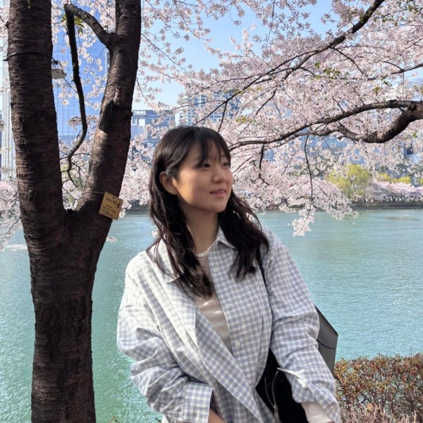

Fly-by-Code: Embodied Coding Agents for Aerial Manipulation with Active Visual and Physical Feedback
Preprint, 2026
Ph.D. Student
Interdisciplinary Program in Artificial Intelligence, Seoul National University
Lab for Autonomous Robotics Research
Hi, I'm a Ph.D. student at Seoul National University, advised by H. Jin Kim. My research interests include generalizable embodied agents, reinforcement learning, and robot safety.

Preprint, 2026
Integrated M.S./Ph.D. Program in Artificial IntelligenceMar. 2025 – Present
Seoul National University
B.S. in Mechanical EngineeringMar. 2020 – Aug. 2024
Yonsei University